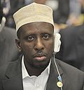
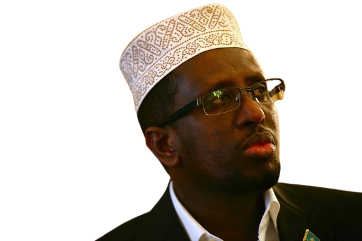

Sheekh Shariif Sheekh Axmed (Af Carabi: الشيخ شريف شيخ أحمد) waa madaxweynahii hore ee Soomaaliya. Waxa uu ku dhashay Mahaday ee gobolka Shabeellada Dhexe bishii Luuliyo 1966 kii. wuxuu ahaa madaxii midowga maxkamadaha islaamiga. wuxuu jaamacado ka soo dhigtay dalalka Liibiya iyo Suudaan. wuxuu ahaa macallin dugsiyada sare ka dhiga juqraafi iyo carabi iyo culuumta diiniga ah. wuxuna wax kuso bartay aqoon bile primary and secondary school. shiikh shariif wuxuu ku hadlaa luqadaha Carabiga Soomaaliga .
Shariif Shiikh Axmed sh maxamuud sh, muuse cigale, waa hoggaamiyihii Maxkamadaha Shareecada ee sannadkii 2006 ka talinayay gobollada Dhexe iyo kuwa koofureed ee Soomaaliya badankood ka hor intii aanay dagaal ku qaadin xarunta Dawladda oo markaa ahayd Baydhaba . Berigii ay Maxkamaduhu dagaalka kula jireen kooxdii la baxday Argagixisa la dirirka , Shariif Shiikh Axmed, waxaa uu lahaa taageerayaal aad u fara badan, gaar ahaanna waxaa si weyn looga taageersanaa magaalada Muqdisho xasilooni aan dhicin tan iyo intii ay khadka ka baxday dowladii kaligiii talis siyaad waxay maxkamaduhii uu shariifku hogaaminayey keeneen nabad.
bishii december 2006 markii maxkamadaha ama maxaakiimta laga adkaaday lix bilood oo ay maamulayeen caasimadda iyo koofurta badankeed kadib wuxuu shiikh shariif go'aansaday inuu la sii dagaalamo ciimadii itoobiyaanka ee dalka ku soo duulay. awood u mayeelan iney mar kale dib u soo noqdaan shiikhu wuxuu markaa galay xuduuda kenya oo markaa isu dhiibay ciidamada kenya asiga iyo saddex nin oo kale bishii jannaayo isla sanadkii 2006 wuxuu kenya kula kulmay safiirka mareykanka waxayna ka wada hadleen arrimaha taageerada Dawladda waxaa mudda lagu haayey hotel ku yaalla nairobi oo ay ciidamada kenya ku waardiyeynayeen ilaa bishii february markaa uu tagay dalka yemen oo la rumeysnaa iney joogaan saaxiibadiis maxaakiimtu. wuxaa uu xulufo la noqday asiga saaxiibka shiikh xasan daahir rag kaga soo tagay arima siyaasadeed dowladii TFGda magaalada casmara ee dadlka eretrie laguna aasaasay isbeheysi la yiraahdo (dib u xoreynta soomaaiya).
Shiikhu wuxuu leeyahay waa 2 xaas iyo waa 16 carur shariifku waa nin naxariis badan dhalinyara ah jecel inuu simo dadka sida caadiga ah waa nin wajigiisa aad u qorxoonyahay gar leh shaarub lahayn tinta waa gaabsadaa koofi ayuu xirtaa badanaa. shiiq sharif waa nin aad u dheereyn markiisa hore dhexdhexaad ayuu ahaa . waxoona ka helaa dood cilmiyeedka iyo hurumarka. sheikh shariif waxaa lagu tilmaami karaa in uu yahay nin maskax badan xasuustiisana ay aad u wanaagsantahay. Sheik shariif waa nin daacad ah oo aan dhihi karno in uu aad u necbanaa musuq maasuqa iyo wax is daba maryeenta.

shariifka waxaa soo sharaxday isbheysigii ARS ee uu hogaaminayey wuxuuna u muuqanayey ninka kaliyata ee hanan kara jagada ugu sareysa ee Dawladda. markii ay bilaabaneysay doorashada waxaa tartanka kula jiray rag gaaraya ilaa 10 nin oo ka wada yimid dhanka dowladii TFGda ee uu hogaaminayey c/llhi yuusuf. wareegii ugu horeeyey waxaa ku soo baxay lix nin ee uu ugu horeeyo shariifku wuxuuna ka helay 215 cod halka rag ay kamid yihiin ay heleen raisal wasaarihii hore nuur cadde oo helay 59 iyo maslax oo helay 60 cod saddexda kale ayaa helay codad intaa ka sii hooseeya waana ay wada tanasuleen dhamaan marka laga reebo maslax oo ku adkeystay tartanka. wareegi ugu dambeeyey wuxuu shariifku kaga adkaaday doorashadi maslax wuxuuna helay 293 cod maalin kadibna waa loo caleemasaaray xilka madaxweynaha, wali neh waa waa madaxwaynaha somalia.Shiikh shariif waxa uu xilkiisa ku ekaa 20 Agoosto oo ah waqtiga ee dawlada kumeelgaarka soomaaliya ku ekeed. Waxaa la sugooyaa in ee soomaaliya doorasho ka dhacdo agoosto dhamaadkeeda. shiikh shariif waa nin aad u wanaagsan alle waxaan ka baryaa in uu u naxariisto kitaabka midigta ka siiyo noloshiisa danbana oo wax yaabo xun uu san ku fikirin in shaa laah. nin kan waxa uu ahaa markiisii hore nin u dagaalamaya isalaamnimo iyo inay soomaali iska kiciso cadawga kusoo duulay laakiin markii ay ciidamaasi jabeen waxaa is bedelay yoolkiisii ahaa xorrranta ummada islaamka ah ee soomaaliyeeed. qof kastana waxa uu alle hortiisa dhigay ayuu leeyahay. waxaasna wuu heli..

Waxaa uu xilka isu soo taagay 10/ 09/2012 Asiga oo malaynaya in uu ku guuleysan doono, laakiin wuu ku qasaaray, waxaana ka guuleeystay Hassan Shiekh Maxamuud waxa uu helay 190 , halka Shariif Shiikh Axmed uu ka helay 70 .